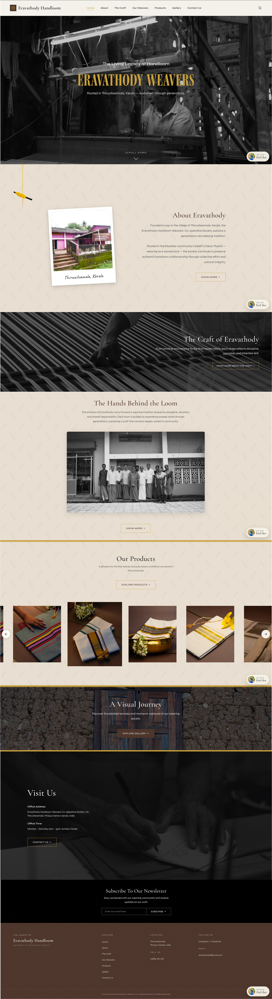
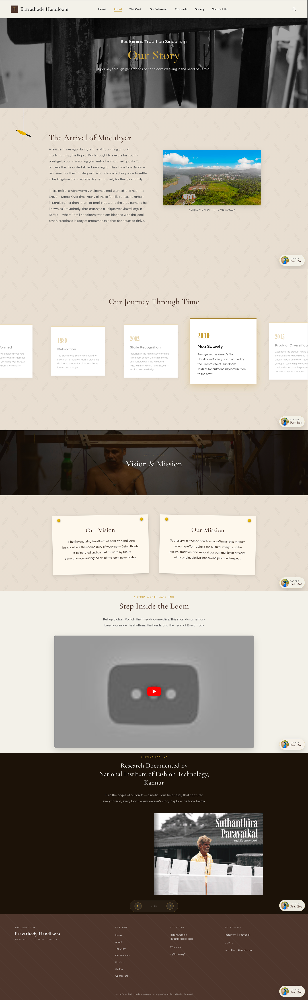
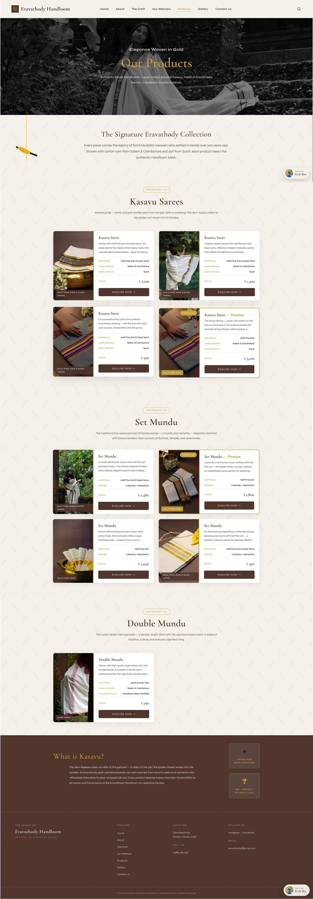
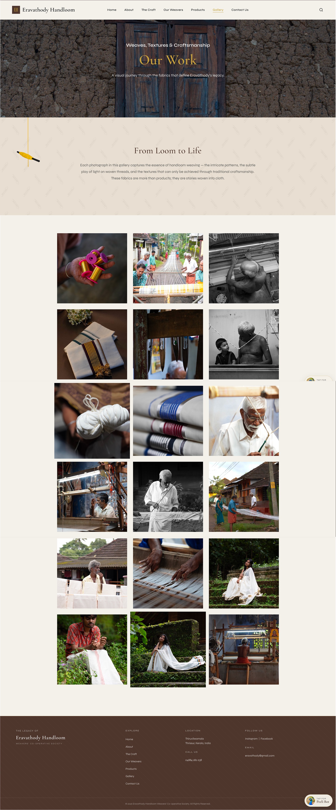
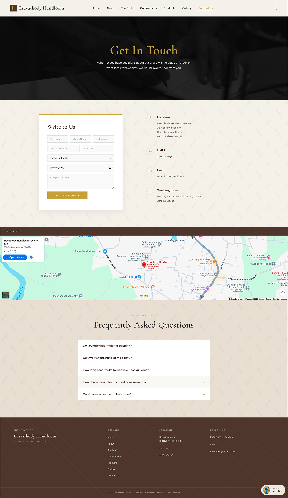

01 · Landing Experience
Home Page Wireframe

Living for five days with the Mudaliar weaving community in Thiruvilwamala to document their heritage, understand their challenges, and build their first digital platform.

Set along the banks of the Bharathapuzha River (Nila) in Kerala’s Thrissur district, Thiruvilwamala is a quiet temple town surrounded by sacred sites like the Sree Vilwadrinatha Temple and Punarjani Caves, and echoed by the calls of peacocks. Nearly 200 years ago, the Raja of Kochi invited skilled Tamil-speaking Mudaliar weaving families from Tamil Nadu to settle in his kingdom and weave fine ceremonial garments for the royal court.
These families were granted land in the Thodi (garden estate) of Eravath Mana, a culturally significant Namboothiri household. Over generations, the settlement came to be known as Eravathody. On 5th July 1941, the Eravathody Handloom Weavers’ Co-operative Society was formally registered, beginning production with nearly 500 master artisans and earning the prestigious Handloom Mark for authenticity—including state honors at the Kalaparamaya Kaithari showcase for master weaver Mr. Sundaran Mudali’s intricate Theyyam saree pallu weave.
As part of our Craft Research Documentation (Group 3: Amokh Sayanth K, Dhivin Saravanan, Hiran Ramesh, Jagtap Samruddhi Vaibhav, Rehan Jose, Shikha Ann Thomson, and Soorya Kiran), we traveled via Ottapalam Railway Station to Thiruvilwamala and spent five days living alongside the weavers—observing their daily lives from dawn to dusk before ever thinking about a digital product.

Spending five uninterrupted days inside the society's two brick weaving sheds and conversing with senior artisans like Sundaran (76, 61 years of experience), Karuppan (73), Annamalai (65), Meenakshi (63), and Ramesh (47) gave us first-hand insights into their philosophy, technique, and struggles:
To preserve the community's oral histories, tools, and daily environment, our field documentation culminated in four primary deliverables: a curated photography collection, two short-form motion reels, an 80-page hardbound coffee table book, and an audio-visual documentary film.
Captured across the weaving sheds and streets of Eravathody. Click any photograph below to open a full-screen preview:


Two vertical reels capturing the acoustic rhythm and tactile environment of the cluster. Click either reel to watch with sound:
An 80-page hardbound publication (9×12 inches, 6×6 grid, set in Mencken Std Narrow, Syne, and Courier) documenting the history, myth, loom tools, process, artisan profiles, and marketing structure of Eravathody. Move your cursor across the 3D book below, and click the book to open the full-screen reader and flip through all 80 pages:

A 2-minute 54-second documentary film capturing the voices of the weavers, the soundscape of the pit looms, and the lived reality of the cluster:
After completing our five-day field documentation, a larger question emerged: how do we create lasting, practical value for the weavers beyond an academic report? While the society produces authentic Handloom Mark textiles, its survival is threatened by mechanized competition and a complete lack of digital visibility.
To validate the need for a dedicated website, we backed our primary field observations with secondary industry research from the All India Handloom Census and Ministry of Textiles reports:
The Conclusion: By designing and building a public web platform for the Eravathody Handloom Weavers’ Co-operative Society, we could solve three problems at once: educate the next generation on why authentic handloom matters over power-loom copies, give the 46 artisans permanent digital recognition, and open a year-round direct inquiry channel so buyers and boutiques can reach the society without middlemen.
How might we honor and represent Eravathody’s 84-year-old Deiva Thozhil weaving heritage, its 46 master artisans, and its Handloom Mark Kasavu textiles through an honest, accessible, and search-optimized digital presence that educates younger generations on pit-loom craftsmanship over power-loom imitations and supports direct customer engagement?
Every visual token in the website's design system was sampled directly from the materials inside the weaving sheds—unbleached starched cotton, Surat gold zari, seasoned rosewood shuttles, and the earthen pit floor:
We paired minimalist 1.5px stroke SVG icons (search, navigation arrows, lightbox controls, phone/location pins) with custom heritage elements—including the Peeli Bot icon (inspired by the peacock feathers of Thiruvilwamala), subtle handloom weave background textures (backdrop.png), and official Handloom Mark provenance badges.


The website structure was organized into 7 intuitive top-level destinations (Home, About, The Craft, Our Weavers, Products, Gallery, and Contact Us), balancing cultural storytelling and process education with direct product discovery and cooperative enquiry:
Low-fidelity structural wireframes establishing information hierarchy, storytelling cadence, product discovery pathways, and visual balance across key user touchpoints:


Translating the structural wireframes into high-fidelity interface screens with the Kasavu cream, loom brown, and temple gold palette, editorial serif typography, and field photography across all seven pages:







Rather than relying on heavy page builders or templates, I engineered the entire 7-page responsive website from scratch using semantic HTML5, modular CSS3, and Vanilla ES6 JavaScript. Below are the key interactive features incorporated into the website and the technical web development architecture behind it:
cloneNode(true)) and hardware-accelerated transform: translateX() with seamless loop resets so visitors can continuously browse handloom photography without scroll dead-ends.
position: sticky with getBoundingClientRect() scroll tracking to crossfade high-resolution loom photography automatically as the user reads through Winding, Warping, and Weaving.
IntersectionObserver API and linear interpolation (Lerp) smoothing to animate the society's milestones from the 1820s royal invitation to 1941 and present day.
St.PageFlip on the About page so visitors can read our 80-page NIFT documentation book with interactive mouse-drag paper physics.
chatbot.js) that dynamically reads the current page's DOM headings and paragraphs (document.querySelectorAll + .innerText.trim()) and answers visitor questions about Eravathody's sarees, weavers, and history via the fetch() API.
.filter() across all 7 pages) and a regex-validated Contact/Product Enquiry form (.replace(/[^0-9]/g, '')) with custom modal confirmation.
To ensure the website performs as a production-grade digital platform for the cooperative society, the development workflow covered four core web engineering pillars:
homepage/, about/, the craft/, our weavers/, products/, gallery/, contact/) sharing global navbar.css, footer.css, search.js, and chatbot.js modules.
application/ld+json Schema.org structured data with exact Thrissur geo-coordinates so the cooperative surfaces on local searches, alongside OpenGraph social cards (og:image), canonical URLs (rel="canonical"), and a custom sitemap.xml.
thumbs/) and implemented native loading="lazy" so the browser only downloads images entering the viewport—reducing bandwidth and energy consumption as benchmarked on WebsiteCarbon.com.
The completed website brings together 83 years of artisan history and contemporary web standards across seven bespoke pages.
This project bridged the full spectrum of communication and product design—beginning on the earthen floor of a 1941 handloom shed in Thiruvilwamala and culminating in a fully coded, responsive digital platform.